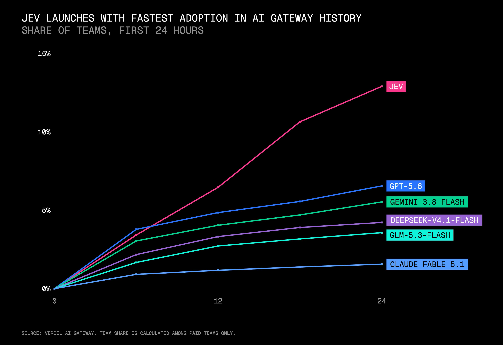
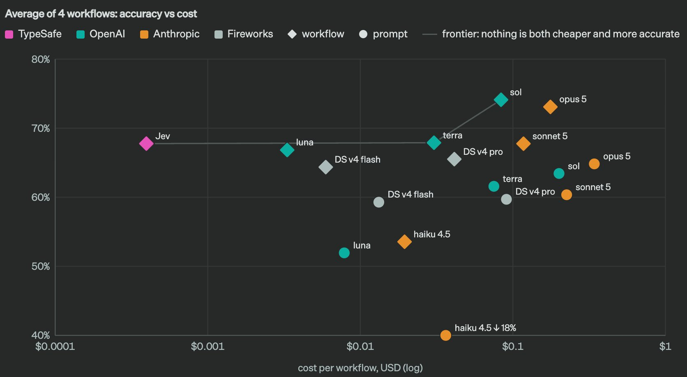

Structured outputs guarantee output adhere to a particular schema. Jev is a new way of doing structured outputs, and it’s both faster and cheaper. In this post, I introduce Jev and talk about the various ways I think Jev can be useful to agentic workflows.
Jev is TypeSafe’s first model first released three days ago. In this post, I explore its three typed primitives — noul, choice, and score and how they enable fast, structured decisions for agentic workflows. We also look at an example of the Speculative fan-out pattern recommended by Typesafe.
Author
Aman Arora
Published
September 19, 2026
Jev was launched by TypeSafe three days ago on 16th September, 2026 and According to Vercel, it has seen the fastest first day adoption in the history of model releases.
As per Vercel, In the first day, Jev reached ~13% of teams, 2x the GPT-5.6 family and 6x Fable 5.1.

Figure 1: Jev had the fastest first-day adoption in Vercel AI Gateway history.
In this blog post, I will explain to you what Jev is, and how it differs from LLMs.
1 What is Jev?
Jev is a small and extremely fast model built to make structured decisions over text. Unlike an LLM, Jev does not generate next tokens (and therefore, is not a chat model!). Instead, it answers questions using a small set of typed primitives and returns probabilities and confidence scores that our code can use directly.
After co-inventing ChatGPT, I kept asking myself: why have superhuman chat models not led to AGI?
I’ve spent the last 2 years in stealth building a new way to train models (RLCD), and a new type of frontier AI model that we are releasing today: Jev
Figure 2: An annotated screenshot of the Jev Console
Let’s understand this in a bit more detail.
As can be seen in Figure 2, Jev has three primitives: noul, choice, and score. Each primitive is useful for a different kind of question. These three primitives should be able to cover any scenarios - IMHO, Jev has definitely made the right bets!
noul is for yes-or-no questions. Given some context and a question, it returns a number between 0 and 1: the probability that the answer is yes. So, in our case, the returned output is 0.43 which means - Jev thinks that there is a 43% probability that you could chat with Dev. (It is not too sure because the provided State or context does not answer this question directly)
choice is useful when we want Jev to select one option from a set of possible answers. We provide the question as instructions and define the possible options under criteria. In Figure 2, each criterion has a value of null; this simply means that the option does not need an additional description. Jev returns the selected option, the probability of every option, and a separate confidence value. In the above example, it returned the output_type as None of the Above with 50% confidence.
Finally, score is useful when the answer lies on an ordered scale. We define what each level means, and Jev can return a value between those levels. For example, the similarity_to_wrappers question in Figure 2 uses a scale from 0 to 4.
0 means nothing in common
1 means slight conceptual overlap
2 means substantial overlap
3 means nearly the same, and
4 means identical.
Jev returns a score of 0.77, placing the answer between levels 0 and 1. The 77% confidence shown beside it is a separate value - it tells us how certain Jev is about that score.
2 The biggest difference from LLMs
LLMs are autoregressive. When LLM returns structured JSON, it still generates that response sequentially, one token at a time. However, with Jev, every question in a request is evaluated in parallel against the same state rather than being generated as part of one token-by-token response.
The gains aren’t free: Jev can't generate text
Comparing Jev vs LLMs side-by-side makes the trade-off clear
Fun fact: replacing sequential computation with parallel is the same way Transformers leapfrogged RNNs pic.twitter.com/ockGnenCPP
The only drawback or rather limitation of Jev that I felt was it’s context length. The full request can have a context length of 64K tokens.
State consists of 32K tokens
Questions consist of 32K tokens.
As a result, Jev is better suited to compact state and atomic questions. See TypeSafe’s model limits.
This parallelism is what makes Jev extremely fast. In Figure 2, Jev evaluates all three questions in 103 ms + 196 ms, or 299 ms in total. Next, let’s send the same state and questions to GPT-5.6 Luna and compare the observed latency.
3 Asking an LLM the same questions
For comparison, the following cell passes the exact same state to GPT-5.6 Luna. The three Jev primitives map naturally to ordinary Pydantic types: noul becomes a bool, choice becomes an enum, and score becomes a constrained float. The questions live in the field descriptions, and the Pydantic model becomes the output schema.
NoteRun this notebook yourself
This post is a working Jupyter notebook, so you can run it end to end. I have folded the code blocks by default to keep the post readable. Open any Code section to see the underlying code. To follow along, copy .env.example to .env and add the API keys for the examples you want to run:
import jsonimport osimport timefrom enum import Enumfrom dotenv import load_dotenvfrom openai import OpenAIfrom pydantic import BaseModel, Fieldload_dotenv()client = OpenAI()state = ("Jev is TypeSafe's first public System One model, which is a ""fundamentally new class of AI models, architected with new ""training and sampling methods researched by TypeSafe for the last ""two years.")class OutputType(str, Enum): # Maps to `output_type` in @fig-1 FREE_FORM ="Free-form text generation" MACHINE_NATIVE ="Machine-native structured decisions from an answer space defined by the human" TYPED ="Typed outputs with confidence values, shaped by the user when they declare the primitive as part of their question" CONVERTED ="Structured output converted from a text response" EMOJI ="Emoji, exclusively 👍" QUESTIONS ="Questions about your prompt" ALL ="All of the above" NONE ="None of the above"class Answers(BaseModel): can_you_chat_with_jev: bool= Field( description="Can you chat with Jev, TypeSafe's new model?" ) output_type: OutputType = Field( description="What kind of output does Jev produce?" ) similarity_to_wrappers: float= Field( ge=0, le=4, description=("How similar is Jev's architecture to an LLM wrapper prompted to output JSON? ""Use this scale: ""0 = Nothing in common, in concept or in execution; ""1 = Slight conceptual overlap, but fundamentally different inner workings; ""2 = Substantial overlap in both concept and execution with similar inner workings; ""3 = Nearly the same, differing only in the surface-level details; ""4 = Identical." ), )started = time.perf_counter()response = client.responses.parse( model="gpt-5.6-luna", reasoning={"effort": "none"}, instructions="Evaluate the supplied state and populate the response schema.",input=state, text_format=Answers, store=False,)elapsed_ms = (time.perf_counter() - started) *1_000usage = response.usagesummary = {"parsed_output": response.output_parsed.model_dump(mode="json"),"total_tokens": usage.total_tokens,"observed_latency_ms": round(elapsed_ms),}print(json.dumps(summary, indent=2, ensure_ascii=False))
The GPT-5.6 Luna call took 1,114 ms, while Jev took 299 ms for the same state and three questions. In this example, the LLM call took around 3.7× as long.
This is only one observed request rather than a full benchmark, but it makes the practical difference clear: the LLM generates the structured response sequentially, whereas Jev evaluates the questions in parallel.
5 Cost and workflow evaluations
TypeSafe also designed a new kind of evaluation called workflow evals to measure how well a model performs. Instead of asking a model to solve an entire task with one large prompt, a workflow/harness decomposes the policy into narrow typed questions and leaves deterministic rules, calculations, and branching to code.

Figure 3: Average accuracy versus cost across TypeSafe’s four published workflow evaluations.
On these four evaluations, the workflow version is more accurate, cheaper, and faster.
NoteA useful caveat
These evaluations are created by TypeSafe’s own model evaluation team. They are not owned by an independent benchmarking body. Which leads to the following questions:
What if instead of using one large prompt, the harness for the LLM was also broken into typed decisions?
What if instead of using “high” thinking effort, low or medium was used?
Would the gap between Jev and other providers be the same if the LLM harness had been designed differently?
Despite the questions that I raised above, it is still a good benchmark to see how well Jev performs and how fast it is when making typed decisions.
6 What does this speed unlock?
Jev’s speed makes it practical to use a model in places where an LLM would be too slow or expensive. TypeSafe’s official smart home assistant demo is a good example.
A request such as “Turn off all of the lights in the house” is evaluated against several questions at once: what kind of request is this, which part of the house does it apply to, which devices should be targeted, and what action should be taken?
We make only one API call to Jev based on the “State” (which is “Turn of all of the lights in the house”) and evaluate every question based on this state.
Many more demos have emerged on the internet, including Jev playing Doom, which most of you might have seen already.
Other examples where Jev would make sense to me are:
Jev as a model router - Jev classifies user intent, and based on the complexity of the prompt, routes to the appropriate model with appropriate thinking effort.
Jev as a guardrail - Think of Jev as the “auto” mode evaluator. It could evaluate every command and classify if it safe to run or not in coding assistants.
Jev as a ReRanker - Jev could score and rerank candidate documents.
Now, let’s look at speculative fan out which is a pattern recommended by the TypeSafe team which will give you more insights into how some of these demos have been built.
7 Speculative fan-out
This speed also enables a pattern TypeSafe calls speculative fan-out. Instead of asking one question, waiting for its answer, and then deciding which question to ask next, we send every question we might need in a single request. Jev evaluates them in parallel; once the results return, our code keeps the answers that are relevant and ignores the rest.
Consider support-ticket triage. A sequential workflow might first classify the ticket and, only if it is a bug report, make another call to determine its severity and whether it can be reproduced. With speculative fan-out, we can ask for the category, bug severity, reproducibility, refund likelihood, and customer frustration upfront. If the ticket is not a bug report, the bug-specific answers are simply ignored.
7.1 Route with code
The result is not a longer model-generated chain. It is a set of typed, probabilistic decisions that ordinary code can compose. If the category is bug_report, our code reads the severity and reproducibility answers. If it is billing, it reads the refund answer instead. Confidence thresholds can determine when the system should act automatically and when it should ask for review.
The model handles the fuzzy judgment; our code retains control over the workflow. The following example adapts TypeSafe’s official speculative fan-out pattern into a runnable notebook cell.
Code
%pip install -q typesafe-sdk
Note: you may need to restart the kernel to use updated packages.
Code
import jsonimport osimport timefrom dotenv import load_dotenvfrom typesafe_sdk import Choice, Noul, Score, TypeSafeClientload_dotenv()ticket = ("The dashboard crashes with a 500 error every time I upload a CSV. ""I reproduced it in Chrome and Safari after clearing the cache. ""This is blocking our month-end reporting.")questions = {"category": Choice( instructions="What kind of support ticket is this?", criteria={"bug_report": "A product defect or unexpected failure","billing": "A payment, invoice, subscription, or refund issue","feature_request": "A request for new functionality","account_access": "A login, permissions, or account-access issue","other": "None of the other categories apply", }, ),"bug_severity": Score( instructions="How severe is the reported bug?", criteria=["Minor inconvenience with a simple workaround","Important workflow is degraded","Critical workflow is completely blocked", ], ),"has_reproducible_steps": Noul( instructions="Does the ticket provide reproducible steps or conditions?", ),"refund_requested": Noul( instructions="Does the customer explicitly request a refund?", ),"frustration": Score( instructions="How frustrated does the customer appear?", criteria=["Calm and factual","Frustrated but civil","Highly frustrated or angry", ], ),}started = time.perf_counter()with TypeSafeClient() as client: response = client.system_one(state=ticket, questions=questions)elapsed_ms = (time.perf_counter() - started) *1_000category = response.choices["category"]bug_severity = response.scores["bug_severity"]bug_repro = response.nouls["has_reproducible_steps"]refund = response.nouls["refund_requested"]frustration = response.scores["frustration"]
Let’s unpack this response using TypeSafe’s official documentation:
category is a choice, so Jev returns the most likely option together with the probability of every option. Here, all the probability is on bug_report, so both its probability and the confidence of the answer are 1.0.
bug_severity is a score over three levels numbered 0, 1, and 2. Jev places all the probability on level 2—“Critical workflow is completely blocked”—which gives us a score of 2.0 with 1.0 confidence.
has_reproducible_steps and refund_requested are noul questions, so their values are simply the probability that the answer is yes: 0.88 for reproducible steps and only 0.01 for a refund request. Unlike a choice or score, a noul does not return a separate confidence value.
Finally, frustration has 0.14 probability on “Calm and factual,” 0.86 on “Frustrated but civil,” and none on “Highly frustrated or angry.” This produces a score of 0.86 and a confidence of 0.78: Jev reads the customer as frustrated but civil, although the answer is not quite as clear-cut as the category or severity answers.
For choice and score, confidence tells us how certain Jev is about the answer.
In this case, the category confidence is high enough for our code to route the ticket automatically. Because Jev classified it as a bug report, we use the severity and reproducibility answers and ignore the refund answer, which would only matter for a billing ticket. The bug is both critical and reproducible, so the ticket is escalated to engineering. priority remains False because the frustration score is below our threshold of 1.5; here, that flag represents the need for a priority customer response, not the technical severity of the bug. This is the idea behind speculative fan-out: Jev answers every potentially useful question in one request, and ordinary code decides which answers matter and what should happen next.
8 Conclusion
Jev is not a replacement for LLMs. It cannot generate text, has a much smaller context window, and is designed for structured outputs with confidence scores.
When the task is atomic, that is where Jev can be most useful.
Jev is not a new idea, in fact, it was tried about a year ago. See this claim on HackerNews. However, in the same breath - LLMs were not a new idea either. But ChatGPT packaged them into a commercial success.
Open Source alternatives for Jev have also emerged such as:
The success of Jev explains how badly the world needed a faster structured decision making model. In this post, I have shared a brief intro to Jev with all of you, and look forward to experimenting with the Open Source version next in a follow up post.
Citation
BibTeX citation:
@online{arora2026,
author = {Arora, Aman},
title = {Jev: {A} {New} {Way} to {Make} {Probabilistic} {Decisions}},
date = {2026-09-19},
url = {https://amaarora.github.io/posts/2026-19-09-jev-intro.html},
langid = {en}
}